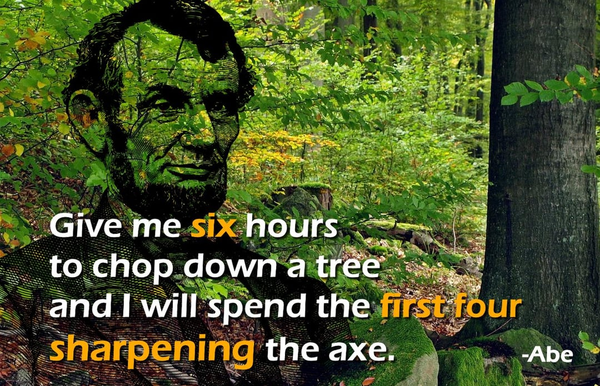
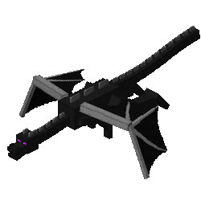

My Skills
My Skills
My Skills
My Skills
Skills, MCPs, context engineering, and autonomous loops. This is how you get the most out of Claude Code.

Claude is Steve from Minecraft. Capable alone -- but with the right gear, unstoppable.


Humans are the bottleneck. Claude's output quality is proportional to what you give it.
# CLAUDE.md — your project's persistent memory
- Build: npm run build
- Test: npm run test
- Style: ES modules, not CommonJS
- Architecture: src/features/[name]/
- Always run tests before committing

Chain-of-Verification. Claude tests its own code.
Generate initial response from the prompt
Decompose into independent verification questions
Sub-agents check each claim against docs & codebase
Synthesize corrected, verified output
Your 5-word prompt gets wrapped in the full CoVe verification framework. The skill modifies how Claude processes your request — your prompt becomes the input to Stage 1, and the skill's instructions drive the remaining three stages autonomously.

As the context window fills, quality degrades. Earlier instructions get buried. Output falls off a cliff.
We need systems that manage context automatically.

